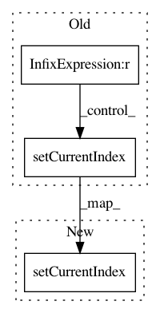

fc2ea63d83934277a866ff59dfecdf542c6d95c1,ilastik/applets/nanshe/dictionaryLearning/nansheDictionaryLearningGui.py,NansheDictionaryLearningGui,apply_operator_settings_to_gui,#NansheDictionaryLearningGui#,126
Before Change
def apply_operator_settings_to_gui(self):
self.ndim = len(self.topLevelOperatorView.InputImage.meta.shape)
if self.topLevelOperatorView.Ord.value == -numpy.inf:
self._drawer.NormValueSelection.setCurrentIndex(1)
self._drawer.NormValue.setEnabled(False)
elif self.topLevelOperatorView.Ord.value == numpy.inf:
self._drawer.NormValueSelection.setCurrentIndex(2)
self._drawer.NormValue.setEnabled(False)
else:
self._drawer.NormValueSelection.setCurrentIndex(0)
self._drawer.NormValue.setEnabled(True)
self._drawer.NormValue.setValue(self.topLevelOperatorView.Ord.value)
self._drawer.KValue.setValue(self.topLevelOperatorView.K.value)
After Change
self.topLevelOperatorView.Ord.setValue(float(self.topLevelOperatorView.Ord.value))
if self.topLevelOperatorView.Ord.value == numpy.inf:
self._drawer.NormValueSelection.setCurrentIndex(0)
elif self.topLevelOperatorView.Ord.value == 2:
self._drawer.NormValueSelection.setCurrentIndex(1)
elif self.topLevelOperatorView.Ord.value == 1:
self._drawer.NormValueSelection.setCurrentIndex(2)
In pattern: SUPERPATTERN
Frequency: 3
Non-data size: 3
Instances
Project Name: ilastik/ilastik
Commit Name: fc2ea63d83934277a866ff59dfecdf542c6d95c1
Time: 2015-03-31
Author: kirkhamj@janelia.hhmi.org
File Name: ilastik/applets/nanshe/dictionaryLearning/nansheDictionaryLearningGui.py
Class Name: NansheDictionaryLearningGui
Method Name: apply_operator_settings_to_gui
Project Name: ilastik/ilastik
Commit Name: 16e8308cec264e3c1427febb86aab1bb719db077
Time: 2017-03-28
Author: carstenhaubold@googlemail.com
File Name: ilastik/workflows/tracking/conservation/pluginExportOptionsDlg.py
Class Name: PluginExportOptionsDlg
Method Name: __init__
Project Name: ilastik/ilastik
Commit Name: 7fe73ef0470594b84c5ad8acd4c4f0ed0a166176
Time: 2019-06-24
Author: tomaz.vieira@embl.de
File Name: ilastik/applets/dataSelection/datasetInfoEditorWidget.py
Class Name: DatasetInfoEditorWidget
Method Name: __init__